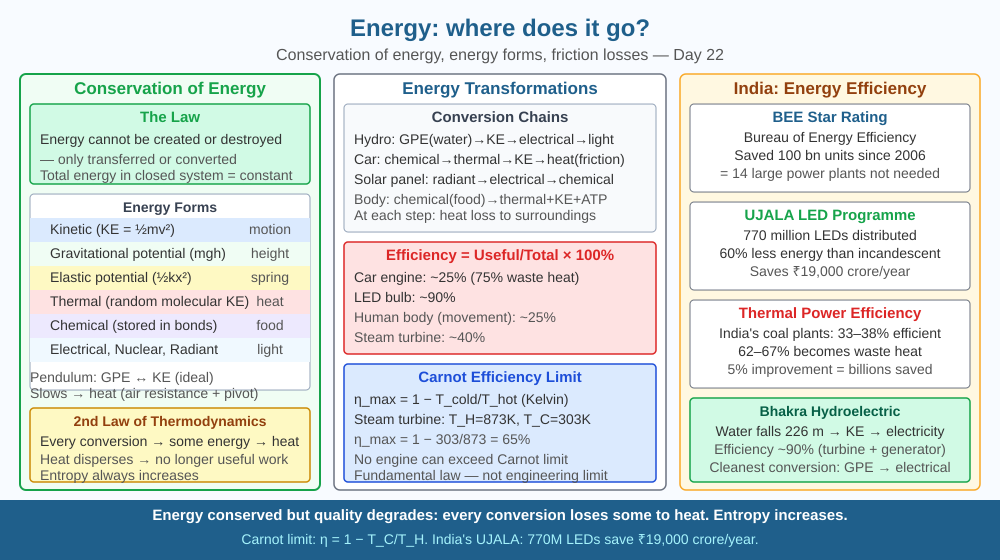

By the end of this lesson, you should be able to state the law of conservation of energy, describe energy transformations, and predict where "lost" mechanical energy goes.
A pendulum swings — and gradually slows down. A phone battery runs flat. Heat always flows from hot to cold, never back. If energy cannot be created or destroyed, where is the energy "going"? Why can't we get it back?
Law of Conservation of Energy: Energy cannot be created or destroyed — only transformed from one form to another. Total energy in a closed system is constant.
Forms of energy: - Kinetic (KE = ½mv²) - Gravitational potential (GPE = mgh) - Elastic potential (EPE = ½kx²) - Thermal (heat — random molecular motion) - Chemical (stored in bonds) - Electrical, Nuclear, Radiant (light)
Energy transformation examples: - Hydroelectric: GPE (water) → KE → electrical → light/heat in homes - Car engine: chemical (petrol) → thermal → KE → (friction) → heat - Pendulum: GPE ↔ KE, repeatedly. Energy "lost" → heat (air resistance + pivot friction)
Where does energy go? The second law of thermodynamics: in every energy transformation, some energy is converted to heat (thermal energy of random molecular motion) — and heat disperses into the environment. It's not "destroyed" — but it's no longer useful for doing work. Entropy (disorder) always increases.
Energy efficiency: Useful energy out / total energy in × 100%. A car engine: ~25% efficient (75% as heat). LED bulb: ~90% efficient. Our bodies: ~25% efficient at converting food to movement.
Think of energy as money in a wallet. The law of conservation says money can never disappear — it can only move or change form (coins to notes to bank balance). But there is a cruel rule: every time you make a transaction, a small service fee is charged, and that fee is paid in a special currency — heat — which vanishes instantly into millions of tiny pockets (air molecules, vibrating atoms) you can never collect from again.
This is why a perpetual motion machine is impossible: the universe charges a fee on every energy exchange, and the fee is irreversible.
The included SVG shows a vertical energy flow chart for a coal power plant. At the top, a coal pile labelled "Chemical energy: 100 J" feeds into a boiler. From the boiler, two arrows emerge: a large grey arrow pointing sideways labelled "Heat lost to surroundings: 65 J" and a narrower blue arrow pointing downward labelled "Useful mechanical energy: 35 J." The blue arrow feeds a turbine, which in turn feeds a generator labelled "Electrical energy delivered: 33 J," with a small red arrow bleeding off "Transmission losses: 2 J." Beneath the main flow, a box shows the efficiency calculation: 33/100 × 100% = 33%. A second small diagram shows a pendulum at three positions — highest point labelled "Max GPE, zero KE," midpoint labelled "Max KE, zero GPE," and a final resting position labelled "All energy → heat via friction."

India's energy consumption is ~900 million tonnes of oil equivalent per year. Reducing losses means generating less. BEE (Bureau of Energy Efficiency) star rating system on appliances — fridges, ACs, fans — has saved India 100 billion units of electricity since 2006, equivalent to 14 large power plants. India's Energy Conservation Act (2001) mandates energy audits for large industries. The thermal power plants that generate ~60% of India's electricity operate at only 33–38% efficiency — 60–67% of every tonne of coal burned becomes waste heat. Improving this by just 5% saves thousands of crores annually and reduces coal imports significantly.
Rub your hands together vigorously for 30 seconds. Feel the warmth — mechanical energy (friction between palms) → thermal energy in your hands and the air. Now ask: could you convert that heat back into hand-rubbing motion spontaneously? No — that would violate the second law of thermodynamics. Energy was conserved but its quality degraded: organised mechanical energy became disordered thermal energy spread across billions of molecules. Measure how warm your hands get by pressing them against your cheeks before and after. The temperature rise is real, measurable evidence that kinetic energy became heat.
Carnot efficiency: The maximum theoretical efficiency of any heat engine operating between a hot reservoir (T_H) and cold reservoir (T_C) is: η_max = 1 − T_C/T_H (in Kelvin). For a steam turbine (T_H = 600°C = 873 K, T_C = 30°C = 303 K): η_max = 1 − 303/873 = 65%. Real turbines reach ~45%. For a nuclear reactor (T_H = 300°C = 573 K): η_max = 48%. The Carnot limit is a fundamental consequence of the second law — no engineering trick can exceed it.
Predict: A proposed new coal plant in Rajasthan will operate at T_H = 700°C (973 K) with a cooling tower at T_C = 40°C (313 K). Calculate the maximum possible Carnot efficiency. If the plant actually achieves 60% of that theoretical maximum, what efficiency will it run at? How many joules of every 100 J of coal energy become useful electricity?
What does the law of conservation of energy state about energy in a closed system?
Correct answer: A
Why is understanding where energy goes in a process more useful than just knowing energy is conserved?
Correct answer: C
If useful mechanical energy in a machine were reduced, where would you predict the lost energy goes?
Correct answer: B
A hydroelectric dam stores water at a height of 80 m. The reservoir holds 1 million kg of water that flows through the turbines each minute.
(a) Calculate the gravitational potential energy released per minute: GPE = mgh (use g = 10 m/s²). (b) If the turbines and generators together operate at 85% efficiency, calculate the electrical energy produced per minute. (c) The transmission lines carry electricity to a city 200 km away and lose 5% of the electrical energy as heat. Calculate the energy delivered to the city per minute. (d) At every stage, where does the "lost" energy go? Name the form of energy it becomes and identify what causes each loss.
Your body generates so much heat as a byproduct of energy transformations that, without sweating and radiation, your core temperature would rise by about 1°C every five minutes during moderate exercise — potentially fatal within an hour. Approximately 75% of the chemical energy in food is released as heat rather than mechanical work. This is not a design flaw; the heat maintains the precise temperature (37°C) at which enzymes work optimally. The "inefficiency" of your muscles is actually a carefully evolved thermostat.
Energy can never be created or destroyed, but every transformation taxes a portion as heat that disperses irreversibly into the environment — this is why machines waste energy, why batteries run flat, and why the universe is gradually cooling toward maximum disorder.